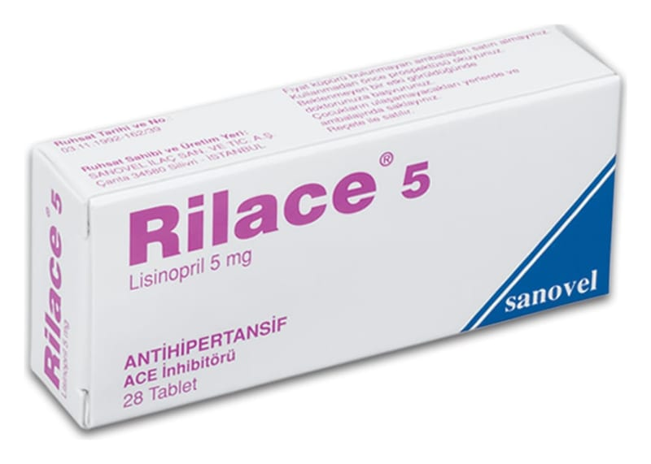

Rilace 5 mg Tablet, 28 Tablet

Ne için kullanılır
KT · Bölüm 1 RİLACE anjiyotensin dönüştürücü enzim inhibitörü (ADE) ilaç grubuna dahildir ve 5 mg lisinopril içerir. Lisinopril kan damarlarınızı genişletir. Bu, kan basıncının düşmesine yardımcı olur. Bu durum aynı zamanda kalbin vücuda daha kolay kan pompalamasını sağlar. RİLACE beyaz renkli, çentikli (Daha düşük dozdaki tedaviler, 5 mg çentikli tablet ikiye bölünerek alınabilir), düz yuvarlak bir tablettir. 28 tablet içeren blisterlerde bulunur. R İLACE aşağıdaki durumlarda kullanılır: - Yüksek kan basıncı (hipertansiyon) tedavisinde, - Kalbin kanı vücudunuza pompalamakta güçlüğün yol açtığı kalp yetmezliği (nefes darlığı, bacaklarda şişlik ve hafif egzersiz sonrası yorgunluk) tedavisinde, - Yakında kalbinizde zayıflamaya yol açabilen kalp krizi (miyokard infarktüsü) geçirdiyseniz, lisinopril bu zayıflamayı yavaşlatır. - Şeker hastalığına (diyabet) bağlı böbrek sorunlarınız ile birlikte kan basıncınız yüksek ise.
RİLACE 6 yaşından büyük çocuklarda yüksek kan basıncı (hipertansiyon) tedavisinde kullanılır.
RİLACE şiddetli böbrek bozukluğu olan çocuklarda kullanılmamalıdı r.